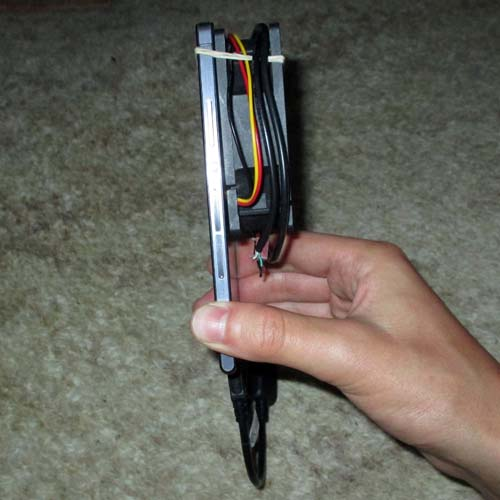
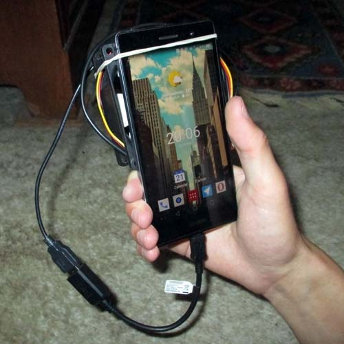
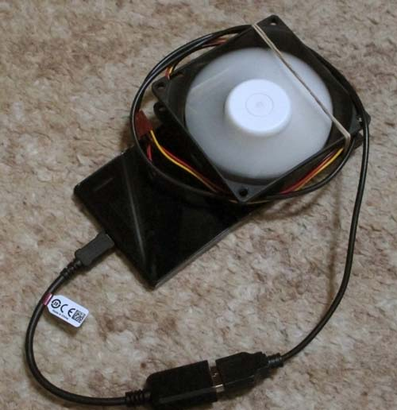
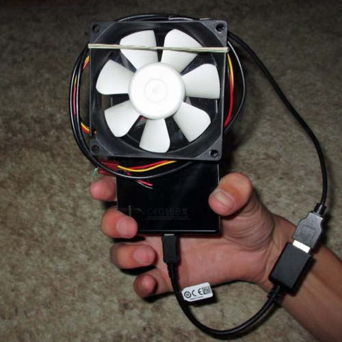

CPU cooler for your phone
This simple solution will keep your hand blister-free and stop your phone's CPU from throttling!
Parody post (although it really does help if you have a metal phone)
Click the images to enlarge them  The thickness of the device is slightly increased.  One handed use is no problem.  The high quality fan is completely silent at 5V, yet realizes significant cooling.  The construction is simple and effective.
What you need
- USB OTG cable
- USB A male to loose wires
- PC case fan that works at 5V
- Rubber band or duct tape
Instructions
- Attach the fan you the back of your phone.
- Connect the USB OTG cable to your phone.
- Insert the USB A male in the USB OTG end
- Insert the loose USB wires 'ground' and '5V' (usually red wire) to the respective case fan inputs (black and red respectively)